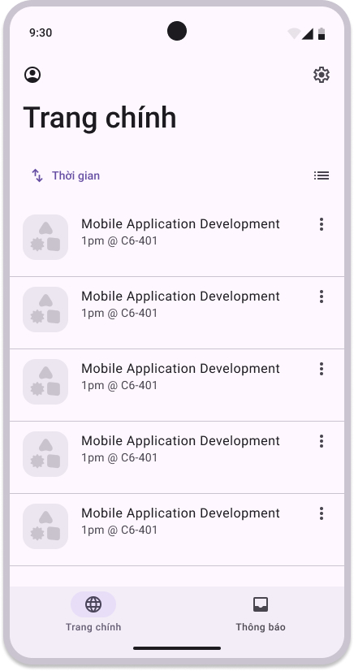
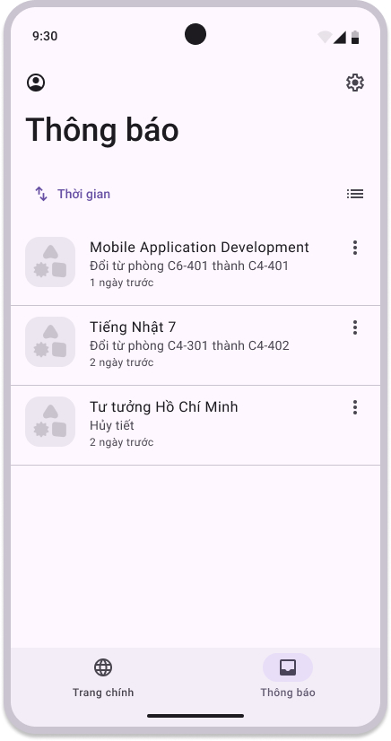

Đồng bộ hóa lịch học, lịch thi
dễ dàng hơn bao giờ hết
BKSched là ứng dụng tự động đồng bộ hóa lịch học, lịch thi từ MyBK, đồng thời đưa thông báo về các thay đổi.
Vấn đề thực tế
Sinh viên Bách Khoa hằng ngày phải kiểm tra lịch học và lịch thi trên MyBK, nhưng hệ thống hiện tại còn nhiều bất tiện:- Phải truy cập MyBK thủ công và liên tục để xem lịch.
- Không có thông báo khi có thay đổi, dễ bỏ lỡ hoặc nhầm lẫn.
- Không hỗ trợ đồng bộ sang ứng dụng lịch cá nhân (như Google Calendar).
- Giao diện web MyBK chưa tối ưu cho di động.
Tính năng chính
- Đồng bộ thời khoá biểu từ MyBK sang Google Calendar
- Đồng bộ lịch thi (khác biệt so với các ứng dụng sẵn có như BKalendar)
- Tự động cập nhật khi có thay đổi về thời gian hoặc phòng học
- Thông báo đẩy (push notification) để nhắc nhở sinh viên kịp thời
Thành viên nhóm
- Trần Quang Thiên
- Hồ Trọng Nghĩa
- Nguyễn Nghiệm
- Đinh Hải Nam
- Lê Hải Long
Công nghệ sử dụng
- React Native
- TypeScript
- Expo
- SQLite
Milestones
- v.0.1.0: Hoàn thành toàn bộ phần thiết lập ban đầu của GitHub Organization, Project board, Milestones và Wiki để chuẩn bị cho giai đoạn phát triển.
- v.0.2.0: Thiết kế giao diện người dùng (UI) cho ứng dụng dựa trên các tính năng MVP đã xác định. Sử dụng Figma để tạo nguyên mẫu trực quan và mô phỏng luồng người dùng chính.
- v.1.0.0: Bắt đầu hiện thực hóa giao diện và tính năng MVP dựa trên bản thiết kế Figma. Hoàn thiện phần frontend và backend cơ bản để tạo ra phiên bản chạy được đầu tiên (v1.0.0) của ứng dụng.
Định hướng dự án
- Đồng bộ tự động thời khóa biểu và lịch thi từ MyBK vào Google Calendar, giúp sinh viên không bỏ lỡ bất kỳ buổi học hay kỳ thi nào.
- Tự động cập nhật và gửi thông báo khi có sự thay đổi về thời gian, phòng học, hoặc lịch thi.
- Tối ưu giao diện cho thiết bị di động, trực quan, dễ dùng và thân thiện với sinh viên.
Tầm nhìn Dự án
BKSched không chỉ là công cụ quản lý lịch học, mà là trợ lý học tập thông minh cho sinh viên Bách khoa — giúp tiết kiệm thời gian, giảm sai sót khi lịch thay đổi, và đồng bộ liền mạch với hệ sinh thái Google.

Đối tượng sử dụng
- Sinh viên Đại học Bách Khoa TP.HCM (HCMUT)
- Những ai muốn quản lý lịch học và lịch thi hiệu quả hơn với Google Calendar

Metrics
- 50–100 sinh viên thử nghiệm.
- Độ chính xác dữ liệu ≥ 95%.
- Retention ≥ 40% sau 1 tháng.
- Thông báo gửi trong < 2 giờ khi có thay đổi.
- Crash-free rate > 98%.